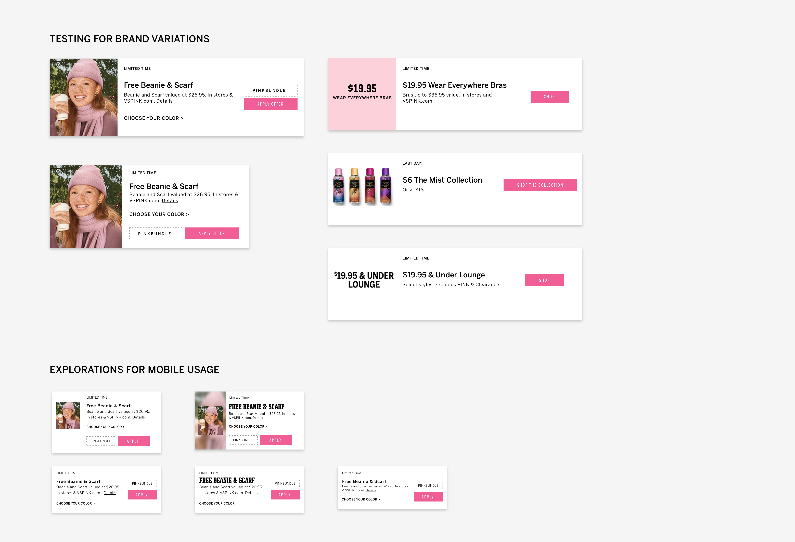
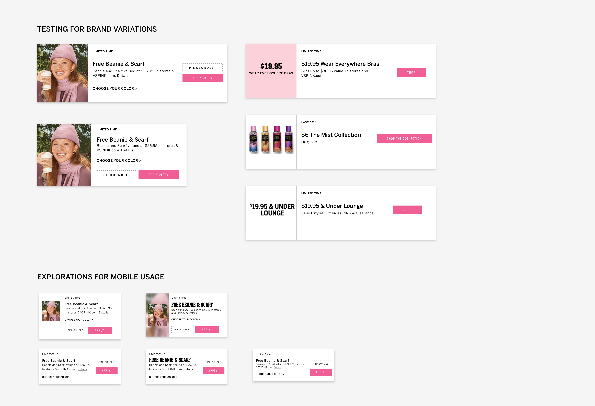

Enhancing the offers experience at Victoria's Secret
Improved discoverability and usability of offers across the desktop and mobile website

- Goal: To enable users to discover, understand and redeem available offers more easily
- What I did: User journey map, sketching, prototyping, card sorting, usability testing, A/B testing and analyzing data
- Duration: July 2019 - October 2019
Offers were one of most loved features of the shopping experience for a Victoria's Secret customer. But they were also one of the top issues that customers had problem with. Customers had a hard time finding offers on the website, as indicated by the call volume to the customer care center. Further, customers had a hard time understanding offers and applying them. The main goal of this project was to improve the offers experience for customer on all platforms (mobile, tablet and web).
CHALLENGE
Difficult to discover
The only way to trigger the offer drawer on desktop was to click Today's Offers. This trigger was missed by a lot of customers, as seen in various research studies, because it was not prominent enough.

CHALLENGE
An opportunity to improve usability
On opening the drawer, the customer would be presented with a scrollable row of offer cards, often exceeding 20 offers. Customers who would miss out on seeing the chevron would wrongly assume that the website had only 4 active offers. In addition to this, the action of horizontal scrolling was not as natural or fast as vertical scrolling.

CHALLENGE
A costly diversion
Offers on the mobile website were present on a dedicated Offers page. To view these offers, a customer had to navigate away from the page they were currently viewing. This diversion caused customers to navigate away from their shopping journey, which sometimes led to session abandonment and eventually caused a loss in revenue. Moreover, the long list of offers on this page meant that a user had to scroll a lot to view all offers. The arrangement of offers on this page also did not provide any value to users looking for brand-specific or product-specific offers.

The Strategy
Approaching the redesign process
I opted to break down the monolithic redesign project into multiple phases, with each phase designed to achieve a specific outcome. The phases were prioritized based on the level of effort required and the impact they would create. I planned to tackle low effort, high impact work first, working towards approaching an ideal state. This test-and-learn strategy enabled us to fully focus on achieving a single predetermined outcome at every step.
Phase One
Improving discoverability
The first step was to make the Offers drawer trigger more prominent. I had been working on a different project which involved making the sitewide offer (Free Shipping offer) more flexible. Based on the requirements, I had decided to move the offer to its own space above the global navigation. So I repurposed that space to also include the trigger for viewing all available Offers. Clicking on the button would take a customer to the dedicated Offers page on both desktop and mobile. While this greatly improved discoverability, it also led the customers to navigate away from their shopping journey. It was necessary to provide a quick way of browsing offers without having to go to a different page.

Phase Two
Improving usability
To improve the shortcomings from Phase One, I decided to reuse an existing design element to create a vertically oriented Offers drawer. This change not only allowed customers to scroll through offers in a more natural way but also opened up opportunities for us to improve the structure of the drawer. Changing the orientation of the drawer enabled us to unify the mobile and desktop offers experience. With an easily accessible drawer on mobile, customers could now view offers without navigating away from the shopping journey.

Phase Three
Making offers easy to understand
Studies have shown that humans have a limited working memory (Miller's Law) and time needed to make a decision increases exponentially with the number of choices available (Hick's Law). I hypothesized that grouping offers would reduce extraneous cognitive load on customers and deliver a better experience. An optimal grouping strategy would also enable customers to easily discover offers suited to their needs. These benefits would in turn increase offer redemption and improve customer loyalty.
In the CMS, each offer card was tagged with the brand(s) it referred to. Using this available data, I decided to group offers by brand and created brand-specific tabs for the customer. This logical segmentation of offers now allowed each brand to directly link customers to their own section inside the Offers drawer.

Taking a pause...
At this point, it was necessary to test our hypotheses and observe how customers would engage with the functionality we had developed so far. This step was crucial in uncovering problems with the design and discovering areas where we could improve it. I conducted unmoderated usability testing using click-through prototypes for the mobile and desktop experience. Participants were women between the ages of 18 to 40, who had shopped online in the past 6 months. The usability test involved a couple of tasks with a post-test survey. The tasks were designed to understand if the participants could find the new Offers drawer and understand the brand-specific tabs inside.
Most participants(4/6) found the Offers drawer on desktop while all participants(6/6) in the mobile experience test found the drawer. All 10 participants who found the Offers drawer demonstrated a complete understanding of the brand-specific tabs inside the drawer. Throughout the test, none of the participants reported any usability issues. The forthcoming A/B tests we had planned out would then help us gauge the impact of the new design on the business. At this point, we were confident that the design did not have any major usability concerns so we decided to move ahead on the design front.
...continuing the momentum
As I updated the container for the offers, another issue became apparent. Historically, sitewide offers were always prioritized over brand-specific offers. Since they were applicable to the entire website, they were visible under each brand-specific tab. So, if there were a couple of sitewide offers available, a customer switching between the brand tabs in the drawer would see the same offers above the fold of the page. This could cause confusion at the customer's end. I saw this as an opportunity to streamline the offer card design and make it uniform across all brands.

Studying the offer cards
Even though all offer cards were set up in a similar way in the CMS, their structure varied across brands and offer types. Due to lack of standards and the need for more flexibility, the brands used a variety of hacks to customize the look of their offer cards. Inconsistent designs made it slightly harder for a customer to understand the offers at a glance. There was a clear opportunity to make the offer cards consistent, with a well defined information hierarchy. A simplified offer card structure would also allow more offer cards to be visible in the drawer, at any given time.
Research
But what constitutes an ideal offer?
To understand what constitutes an ideal offer card, I decided to set up a card sorting exercise. The goal of this exercise was to understand which components of an offer card were important to the customer, why they were important and how the delivery mechanism (web, mobile, email) influenced the ideal design. This exercise was done remotely over Figma, with participants dragging pieces of information into place based on their preferences. There were 4 themes to this exercise – lingerie, beauty, accessories and apparel. I chose to use generic examples to prevent the participants' biases from affecting their decisions/ true choices.

Card sort study insights
The card sorting exercise provided a lot of insights into customer needs. Here are a few notable ones:
- According to the test participants, the most important information in an offer card is - what is the offer, how do I redeem it and how long do I have to redeem it (Title, Offer Code, Label)
- Images convey information about the product and fit but are not important in an offer
- Offer code was deemed to be relatively more important than Click to Apply action
- Shop Now provides a convenient way of redeeming an offer but is not an essential component in the offer card
- Desired information density is dependent on the medium of offer delivery (website/ mobile/ email)
Phase Four
Design explorations for new offer card
The next step was to convert the actionable insights from the card sort exercise into tangible outputs. My goal was to design an offer card structure with a clear hierarchy of information dictated by customer needs, that could be used on mobile as well as the desktop website. I also explored a few high fidelity options to see if a single design structure could work for all brand-specific offers. I was unable to complete this phase as I moved to a new team soon after.
 

Building out the experience
My product team and I broke down this multi-phase project into testable outputs that could be achieved over several sprints. The team managed to complete the development of the new offer trigger (pink bar) and the vertical drawer late last year, achieving half of the planned improvements. As 2020 approached, I moved to the new Personalization team and had to hand over this project to another team.
The designs from Phase One were put through an A/B test in May 2020 where the enhancement version (updated design) was released to 50% of traffic with the remaining 50% experiencing the control version. During the test, the enhancement version saw higher customer engagement with the offers than the control version. The enhancement version was then released to 100% of the traffic.
The new verical Offers drawer (Phase Two) was put through an A/B test in June 2020 in a similar fashion with a 50-50 traffic split. The test concluded with the results indicating that the new Offers drawer was better than the control version. You can now experience the improved Offers experience with the updated Offer bar and the Offers drawer on the website.